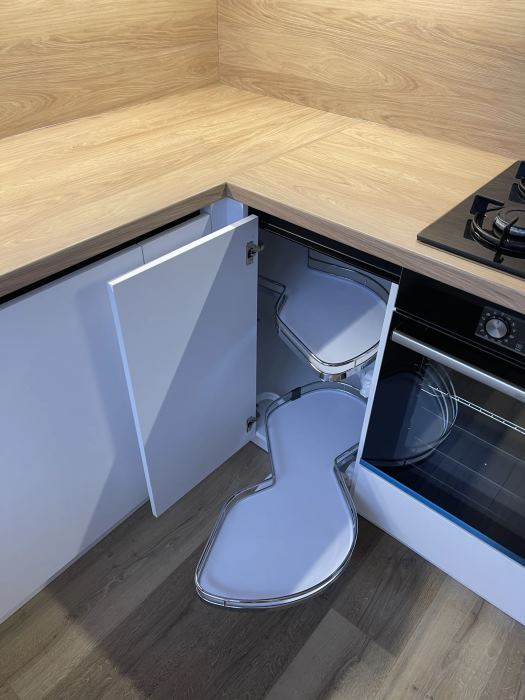

Máte v kuchyni rohovú skrinku, do ktorej odkladáte hrnce, ktoré vytiahnete raz za rok? Nie je to nevyhnutná vlastnosť kuchyne do tvaru L. Roh môže dobre slúžiť, ak sa jeho vnútorné vybavenie vyberie podľa priestoru a vašich zvykov. A niekedy je najrozumnejším riešením aj obyčajná polica – ak k nej máte dobrý prístup.
Pri plánovaní novej kuchyne je lákavé sledovať len farbu dvierok a pracovnej dosky. Práve roh však rozhodne, či budete veci pohodlne vyberať, alebo sa budete zakaždým skloniť a naslepo hľadať panvicu. Vysvetlíme si, čo dokáže LeMans, karusel či rohová zásuvka, kedy sa za mechanizmus oplatí priplatiť a čo si overiť ešte pred výrobou.
Prečo býva roh v kuchyni problémový
V rovnej kuchyni sa ku každej skrinke pristupuje spredu. V rohu sa však dve línie nábytku stretávajú a časť priestoru sa dostane za susednú skrinku. Zvonku vyzerá roh veľký; po otvorení dvierok sa môže ukázať, že k najhlbšiemu miestu poriadne nedočiahnete.
Dôležitý je pritom rozdiel medzi tým, koľko vecí sa do skrinky zmestí, a tým, koľko z nich dokážete pohodlne vybrať. Výhodou nie je len maximálny objem. Ide aj o to, aby ste pri varení nemuseli vykladať polovicu obsahu na podlahu.
Najprv sa pozrite na rozmery a otváranie
Skôr než si vyberiete konkrétny mechanizmus, zistite šírku korpusu, veľkosť otvoru, smer otvárania dvierok a polohu susedných zásuviek. Dôležité sú aj sokel, pracovná doska, steny a prípadná rúra alebo umývačka v blízkosti. Mechanizmus, ktorý funguje v katalógu, nemusí fungovať v každom rohu.
Pri rekonštrukcii staršej kuchyne tiež nemožno automaticky predpokladať, že sa výsuv dá jednoducho dodatočne namontovať. Niekedy tomu bráni vnútorná konštrukcia skrinky alebo rozmery otvoru. Pri novej kuchyni na mieru sa dá rozloženie navrhnúť priamo pre vybraný systém.
Systém LeMans: keď chcete obsah vysunúť smerom k sebe
LeMans je rohový výsuvný systém s tvarovanými policami. Pri otvorení dvierok sa police postupne vysunú zo skrinky do priestoru pred ňou. Namiesto toho, aby ste sa naťahovali k zadnej stene, dostanete odložené hrnce či misy bližšie k rukám.
Výhodou býva komfort pri častom používaní. Každá polica sa ovláda samostatne a je prehľadnejšia než hlboký roh bez výsuvu. Pri konkrétnom modeli treba skontrolovať rozmery, nosnosť, typ montáže a to, či dvierka ani vysúvaná polica nebudú narážať na úchytku alebo susedný nábytok.
Komu sa LeMans oplatí
Predstavte si rodinu, ktorá denne pripravuje večeru a používa niekoľko väčších hrncov. Ak sú uložené v rohu, ktorý sa otvára každý deň, jednoduchý prístup má veľkú hodnotu. Mechanizmus môže ušetriť opakované zohýbanie, prekladanie a hľadanie.
Naopak, keď roh slúži na vianočné formy, veľké servírovacie misy a veci používané dvakrát za rok, investícia do drahšieho výsuvu nemusí byť prioritou. Peniaze možno lepšie využiť na kvalitné zásuvky tam, kde ich budete otvárať denne.
Reálna realizácia vo Viničnom
Interiéroví majstri majú v portfóliu kuchyňu vo Viničnom, v ktorej je použitý rohový výsuvný systém LeMans a veľké zásuvky. Táto realizácia ukazuje spojenie vzhľadu kuchyne s praktickým vnútorným vybavením. Realizácia trvala šesť týždňov; nie je to však univerzálny termín pre ďalšie objednávky.
Pozrite si projekt Kuchyňa vo Viničnom.
Karusel a otočné police: tradičná alternatíva
Karusel využíva otočné police alebo koše, ktoré sa pohybujú v rohu. Obsah si môžete natočiť bližšie k otvoru, bez toho, aby ste vyťahovali celú policu von. Existuje viacero konštrukcií, preto sa ich pohodlie a využiteľný objem líšia.
Pri výbere sa pýtajte, či systém pri otáčaní neblokujú dvierka, ako sa police čistia a či sa na ne pohodlne zmestí to, čo chcete skladovať. Pre ľahšie misy, dózy či menej často používané predmety môže byť karusel praktickou možnosťou. Ak plánujete veľmi ťažké hrnce, overte nosnosť konkrétneho modelu.
Na čo si dať pozor pri údržbe
Otočný mechanizmus alebo výsuv sa používa lepšie, keď je vo vnútri poriadok a nič neprekáža pohybu. Omrvinky, drobné predmety a vyčnievajúce pokrievky dokážu znepríjemniť používanie. Pred objednávkou požiadajte o ukážku alebo video konkrétneho typu systému, nie iba fotografiu zatvorenej kuchyne.
Rohová zásuvka: dobrý prístup, ale špecifická konštrukcia
Rohové zásuvky dokážu využiť miesto pri spojení dvoch strán linky. Často majú neobvyklý tvar a vyžadujú vhodné vedenie. Ich výhodou je podobná logika ako pri klasickej zásuvke – obsah vidíte po vysunutí zhora.
Nevýhodou môže byť vyššia cena a konštrukčná náročnosť. Nie všetky tvarované zásuvky využijú celý objem rohu rovnako účinne. Preto sa nepozerajte len na atraktívnu fotografiu čela; dôležitý je aj vnútorný tvar, nosnosť a rozmery, ktoré zostanú k dispozícii.
Kedy ich zvažovať
Rohová zásuvka môže dávať zmysel pri kuchyni, kde chcete zachovať súvislú líniu čiel a mať obsah prehľadne rozdelený. Pred rozhodnutím porovnajte cenu s dvojicou bežných zásuviek a spôsobom, akým by sa dal využiť susedný modul. Niekedy vyhrá jednoduchšie riešenie bez špeciálnej konštrukcie.
Klasická rohová skrinka bez mechanizmu
Nie každá kuchyňa potrebuje pohyblivý výsuv. Rohová skrinka s policou je konštrukčne jednoduchá a môže poskytnúť veľký úložný priestor. Nevýhodou je náročnejší prístup do zadnej časti. Tento kompromis však môže byť rozumný, keď potrebujete držať rozpočet nižšie a roh neplánujete otvárať každý deň.
Pomôcť môže rozdelenie obsahu do ľahko vytiahnuteľných boxov. Vpredu skladujte častejšie používané veci, vzadu sezónne nádoby. Pri veľkých predmetoch si overte, či ich vôbec dostanete cez otvor dvierok – objem vnútra totiž ešte nezaručuje pohodlné vkladanie.
Alternatíva: roh jednoducho nechať bez skrinky
V niektorých dispozíciách je lepšie slepý roh vynechať a získať jednoduchšie, širšie zásuvky vedľa neho. Nejde o plytvanie, ak výsledkom bude kuchyňa, v ktorej využívate všetky dostupné úložné miesta pohodlne. Rozhodnutie závisí od rozmerov a od množstva vecí, ktoré potrebujete odložiť.
Kuchyňa do L: ako plánovať roh v malej miestnosti
Kuchyňa do L je obľúbená preto, že prirodzene využíva dve susediace steny. V malom byte môže pomôcť oddeliť umývaciu a varnú zónu bez ostrovčeka. Zároveň však vytvára roh, ktorému treba venovať pozornosť už pri prvom návrhu.
Predstavte si malú kuchyňu, kde je drez blízko rohu a vedľa neho umývačka. Ak necháte otváranie zásuviek, dvierok a umývačky bez kontroly, niektoré pohyby sa môžu navzájom blokovať. Dobrý návrh overuje nie iba zatvorený stav, ale aj situáciu, keď sú dvierka a zásuvky otvorené.
Rozhoduje pohyb, nie len množstvo úložného priestoru
Nakreslite si jednoduchú trasu: chladnička, miesto na odkladanie potravín, drez, pracovná plocha a varná doska. Ak musíte počas varenia obchádzať otvorené dvierka rohu, je návrh pravdepodobne potrebné upraviť. Ak je roh určený na objemné predmety, ktoré vyberáte raz týždenne, nemusí byť najdrahší systém nevyhnutný.
Kuchyňa do U alebo s ostrovčekom: kde býva najväčšia chyba
Pri kuchyni do U môžu vzniknúť dokonca dva rohy. Mechanizmy v oboch nie sú automaticky najlepším riešením. Skôr než sa rozhodnete, rozdeľte úložný priestor podľa používania: príbor a taniere blízko servírovania, hrnce pri varení, čistiace prostriedky podľa možností pod drezom a zásoby v samostatnej potravinovej skrini.
Ostrovček je ďalšia plocha na odkladanie a prácu, no potrebuje priestor na prechádzanie a otvorenie zásuviek. Nie je rozumné natlačiť ostrovček do každej kuchyne len preto, že pôsobí moderne. Pri menšom pôdoryse môže dobrá kuchyňa do L s premysleným rohom fungovať lepšie.
Ako porovnať systémy bez zavádzajúcich cenoviek
Cena rohového mechanizmu závisí od výrobcu, rozmeru, povrchovej úpravy, nosnosti, kovania a montáže. Preto nie je fér uvádzať jednu sumu, ktorá by platila pre každý roh a každú kuchyňu. Pri porovnávaní ponúk sa zamerajte na výslednú funkciu a konkrétny rozsah dodávky.
Päť otázok pre návrhára kuchyne
- Aké predmety sa budú v rohu skladovať a ako často ich budeme používať?
- Koľko zostane skutočne prístupného miesta pri otvorených dvierkach?
- Akú nosnosť má navrhnutý systém a čo znamená pre naše hrnce?
- Čo sa stane, ak sa mechanizmus bude potrebovať po rokoch nastaviť alebo vymeniť?
- Je v cenovej ponuke aj montáž, prispôsobenie korpusu a prípadné doplnky?
Ak vám návrhár ukáže pôdorys, pohľad na otvorené skrinky a vysvetlí prípadné kolízie, získate oveľa viac než z obrázka samotného mechanizmu.
Tri modelové situácie z bežného života
Rodina, ktorá varí každý deň
Vo veľkej zásuvke má panvice a pri varnej doske pokrievky. Roh využíva na objemné hrnce. Ak sa doň siaha denne, oplatí sa zvážiť pohodlný výsuv, ktorý ich priblíži k používateľovi. Dôležité je tiež prepojenie rohu s pracovnou plochou, aby sa pri varení nemusela obchádzať kuchyňa.
Menší byt s obmedzeným rozpočtom
Pri kuchyni pre jednu či dve osoby môže byť vhodnejšia jednoduchá rohová skrinka na menej používané veci a kvalitné zásuvky na miestach s častým prístupom. Ušetrené peniaze možno investovať do lepšieho pracovného osvetlenia alebo odolnejšej pracovnej dosky.
Domácnosť, ktorá potrebuje veľa úložiska
Ak už máte dostatok priestoru na bežné hrnce, do rohu môžu ísť servírovacie misy, zaváraniny či sezónne pomôcky. V tomto prípade je rozhodujúce, čo do skrinky prejde cez otvor a či bude prístup bezpečný. Veľký mechanizmus nie je automaticky lepší než prehľadné úložné boxy.
Tieto tri príklady sú modelové a nevzťahujú sa na konkrétnych zákazníkov. Pri reálnom projekte rozhoduje zameranie a presné vyhotovenie nábytku.
Najčastejšie chyby pri plánovaní rohu
Veľmi častou chybou je vybrať si mechanizmus až po odsúhlasení celej kuchyne. Ďalšou je rozhodovať len podľa ceny a zabudnúť na skutočný prístup. Problémy tiež vznikajú, keď sa pri návrhu nekontroluje otvorenie umývačky, dvierok a zásuviek vedľa seba.
Vyhnite sa aj predstave, že každá centimetrová medzera musí byť úplne zaplnená. Dobré dispozičné riešenie necháva priestor na pohodlný pohyb, montáž a prípadné úpravy. Oplatí sa tiež myslieť na osvetlenie pracovnej zóny, nielen na samotnú skrinku.
Časté otázky o rohových skrinkách
Je systém LeMans vhodný do každej kuchyne do L?
Nie. Vhodnosť závisí od rozmerov korpusu, otvoru, smeru otvárania a susedného vybavenia. Typ systému treba vybrať až po presnom návrhu.
Čo je lepšie: LeMans alebo karusel?
LeMans vyťahuje police smerom von, karusel ich otáča vnútri rohu. Pohodlie a dostupný objem závisia od konkrétneho modelu. Najlepšie je porovnať možnosti podľa toho, čo chcete skladovať.
Dá sa rohový výsuv namontovať do starej kuchyne?
Niekedy áno, ale nie vždy. Treba skontrolovať rozmery, konštrukciu a voľný priestor na mechanizmus. Pred kúpou je rozumné nechať skrinku zmerať.
Oplatí sa priplatiť za drahší mechanizmus?
Najmä tam, kde ho budete používať pravidelne a kde zlepší prístup k ťažším alebo objemným veciam. Pri zriedka používanom úložisku môže stačiť jednoduchšia polica.
Môžem mať roh bez rohového kovania?
Áno. Slepý roh alebo obyčajná polica nie sú chyba, ak sú zámernou súčasťou návrhu. Rozhoduje funkčnosť celej kuchyne, nie množstvo špeciálnych mechanizmov.
Chcete kuchyňu s praktickým rohom?
Ak plánujete kuchyňu na mieru v Bratislave a okolí, pošlite približné rozmery, fotografiu priestoru a stručný opis toho, čo chcete v rohu skladovať. Interiéroví majstri vám pomôžu prejsť možnosti pri prvej bezplatnej konzultácii. Pozrite si službu Kuchyne na mieru alebo pošlite nezáväzný dopyt.
Súvisiace články: Koľko stojí kuchyňa na mieru? a Vstavaná skriňa: posuvné alebo krídlové dvere?